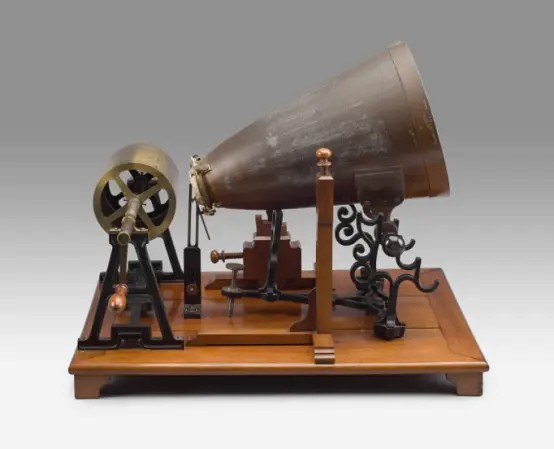
声音第一次，被看见
在留声机诞生之前，想听音乐只能去现场——那是达官贵人的消遣，平民百姓只有自己的哼唱。 1857 年，法国发明家斯科特做了一件近乎浪漫的事：让一支针尖随声波的起伏起舞， 在涂黑的纸面上刻下蜿蜒的痕迹。他记下了声音的形状，却唤不回声音本身。 这是人类第一次，把「听见」变成了「看见」。
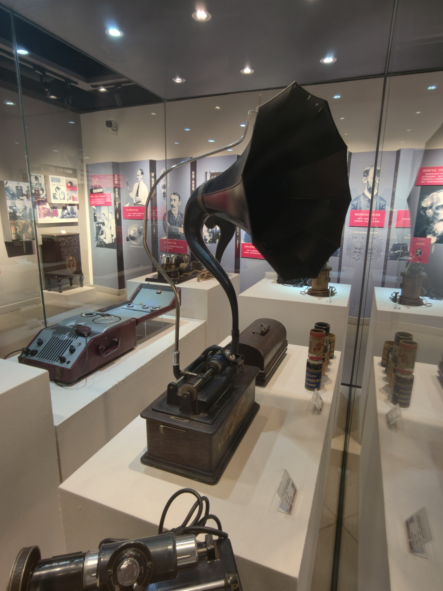
《玛丽有只小羔羊》，从机器里回来
爱迪生从电话传话器里得到灵感：既然声音能让短针颤动，那么颤动能否换回声音？ 1877 年 8 月，助手柯尔希照着图纸做出那台机器——大圆筒、曲柄、说话机，以及一卷锡箔。 爱迪生对着它唱了一首童谣。当曲柄再次转动，那个已经消失的声音，从针尖下爬了出来。 世界为之轰动，人们称他为「科学界的拿破仑」。
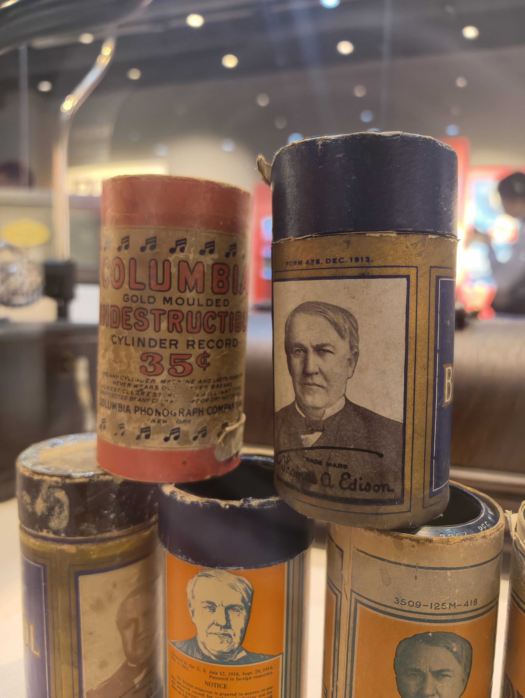
圆筒的黄昏，唱片的黎明
圆筒有个致命伤——它无法被复制。录一支小乐队要十台大喇叭留声机同时开工， 演奏二十遍才得两百份拷贝，像罚抄课文，绑两支笔也只能抄两遍。 1887 年，旅美德国人伯利纳把声音刻进一张扁平的圆盘； 1888 年 5 月 6 日，费城，世界第一张碟形唱片开始旋转。 两种介质僵持了二十年，唱片赢了。
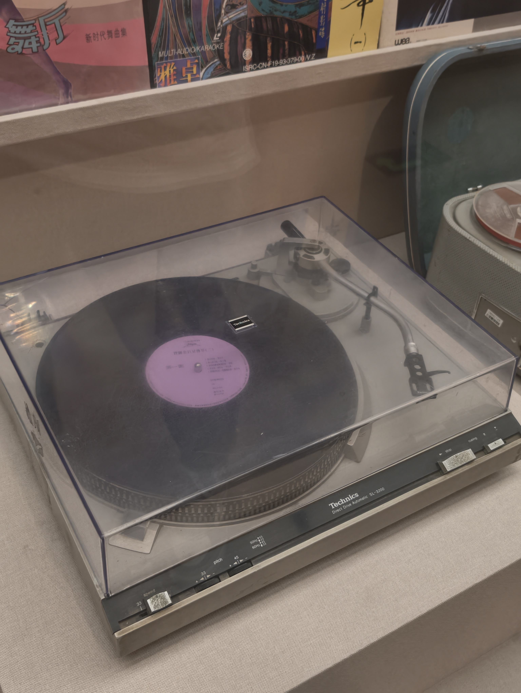
把声音，存进一根钢丝
丹麦工程师普尔森让电流穿过线圈，钢丝被切成无数微小的磁铁，按声音的强弱排成队列。 声音从此不再只是刻痕，而是磁的记忆——录，是声波化作电流、电流化作磁场； 放，是磁场化作电流、电流化回声波。理论上，只要有一根绕地球一圈的钢丝， 就能录下绕地球一圈的声音。
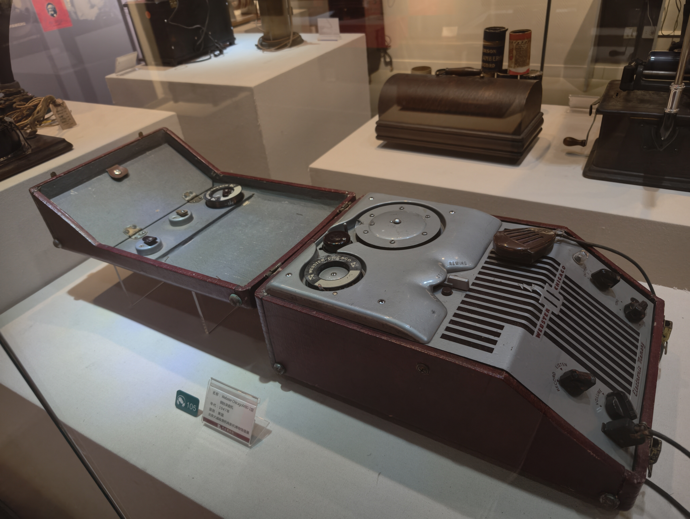
从「听个响」，到听见整个乐队
电气录音之前，声音只能靠机械驱动：乐手要把头伸进大喇叭口， 德国人甚至造出喇叭与小提琴杂交的怪乐器来凑音量，音色却一塌糊涂。 1925 年，贝尔实验室的电气录音与电动麦克风降临， 频率响应从 200–2000Hz 一跃到 100–8000Hz。钢琴终于像钢琴，乐队终于像乐队。
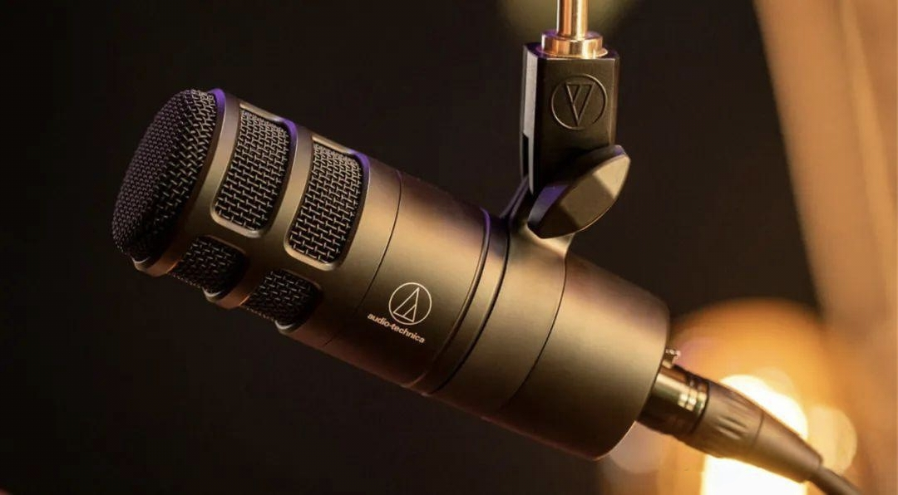
三十三又三分之一转，黑胶的黄金年代
1931 年，RCA 研制出 33⅓ 转的密纹唱片。转速降下来，播放时间就长上去； 材料从虫胶换成更细密的材质，颗粒更细，能刻下更微小的震动，高保真由此成为可能。 1948 年，哥伦比亚公司大批量生产新一代 LP，黑胶时代正式到来。 1950 到 1970 年代，那些把录音当作艺术而非生意的录音大师， 与指挥大师和顶级乐团一起，留下了无数传世的声响。
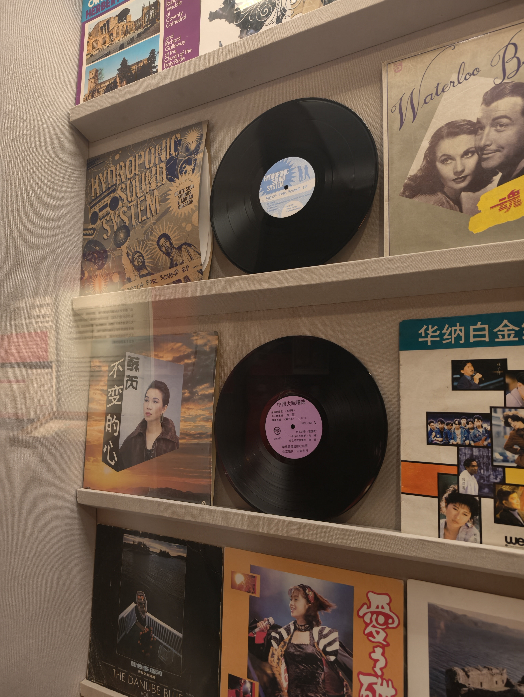
小小的四十五转，装下整个青春
RCA 推出 45 转唱片：直径更小、更薄、不易碎，运输成本低； 音质优于 78 转，甚至比部分 LP 更好。它配上自带喇叭的便携唱机， 成了青少年的口袋乐队，催熟了 1950 年代的单曲市场—— 那种「一张碟两三首歌」的迷你专辑形态，一直沿用至今。
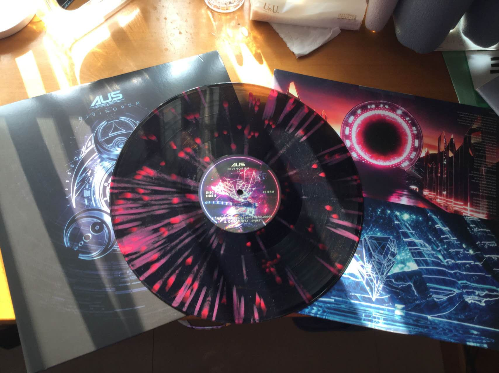
一卷磁带，剪辑时间
1935 年，德国通用电气公司造出使用塑料磁带的录音机。 1963 年，飞利浦把磁带装进一只双面塑料小盒——盒式磁带诞生， 体积只有早期循环磁带机的四分之一，每面能装 30 到 45 分钟。 录音时长不再受限，可靠、机动，还能剪开重接。 1971 年磁带被认真用于音乐录制，1976 年首盘 120 分钟磁带问世。
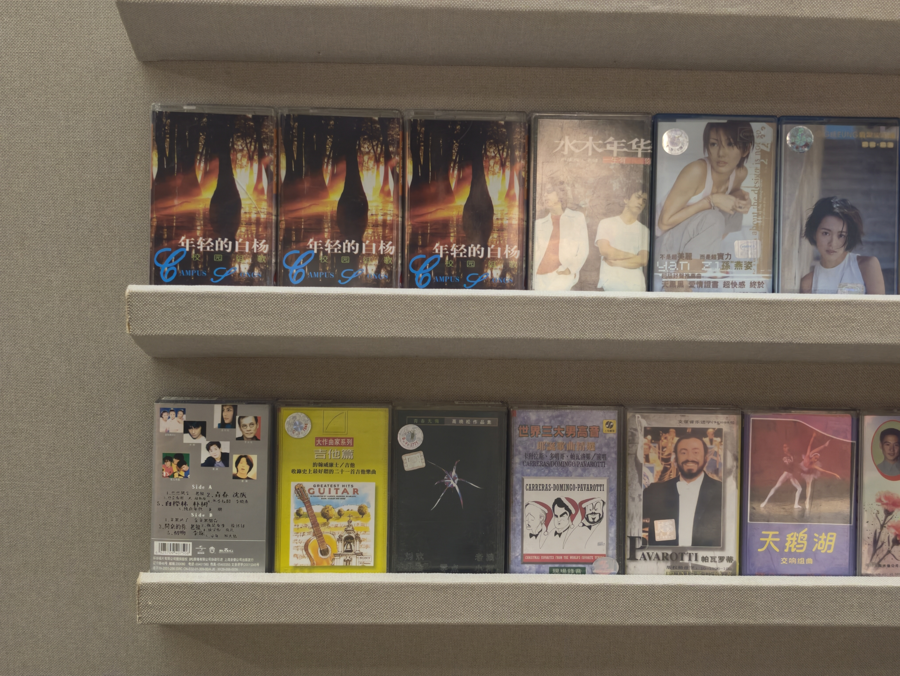
把音乐，装进口袋
在那之前，人们背着硕大的双喇叭录音机边走边唱。 索尼 Walkman 出现之后，耳机线垂下来，世界退到身后—— 音乐第一次只属于一个人。盒式磁带取代黑胶， 成为便携音乐市场的象征。城市从此有了自己的背景音。
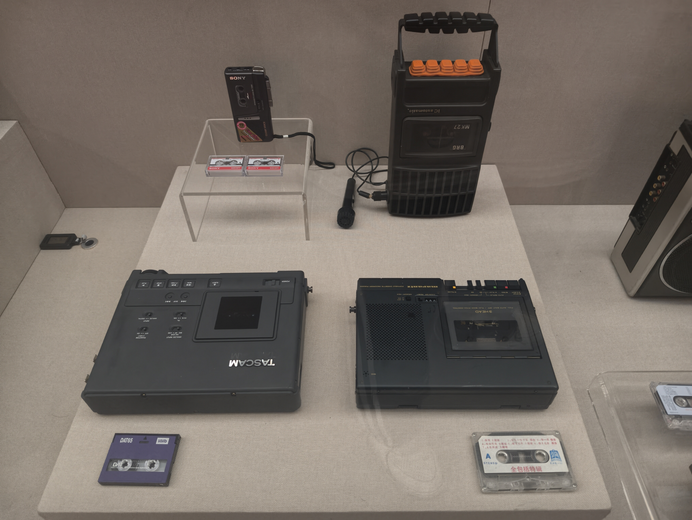
水晶般清澈的，0 与 1
1974 年，飞利浦与索尼联手发表音乐光盘。1982 年 10 月 1 日， 索尼在日本发布世界第一部商用 CD 播放器 CDP-101；同一年， 全球首张 CD 在德国汉诺威的飞利浦工厂诞生。 黑胶那「丝丝啪啪」的底噪退场，取而代之的是一种如水晶般透明清澈的聆听体验。 数字音频的序幕，就此拉开。
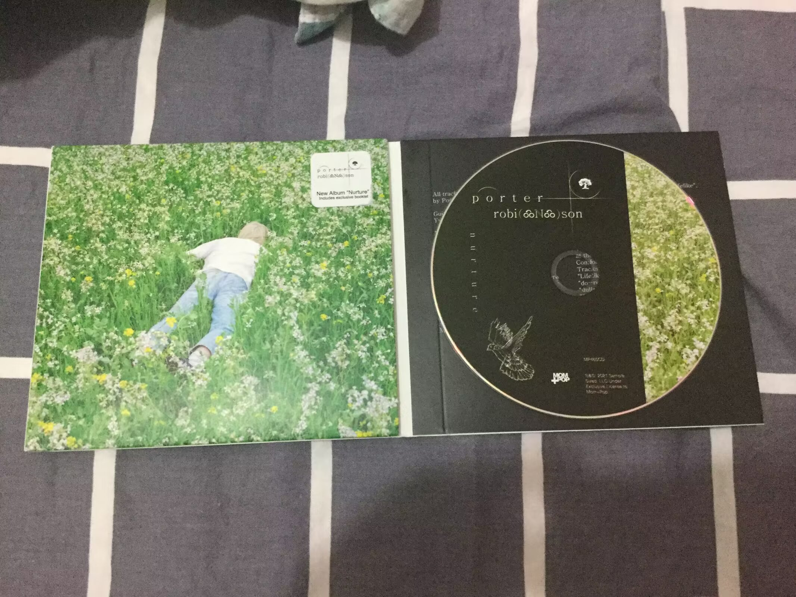
压缩，然后席卷一切
更小的体积，尚可的音质，易于播放、制作与分享。 MP3 借着网络在 1990 年代末迅速蔓延，2000 年前后风行全球， 便携式播放器随之普及。代价是漫长的版权纠纷， 唱片工业与创作者的权益被狠狠冲击。 而当智能手机到来，MP3 播放器比它的所有前辈消失得都快。
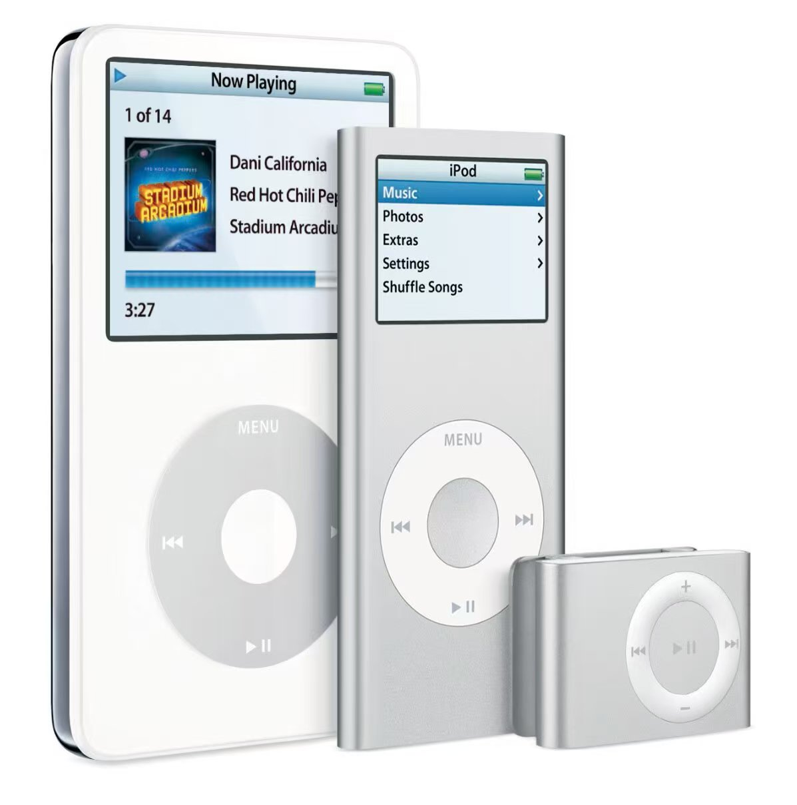
一百年，声音绕了一圈
从爱迪生的锡箔圆筒到云端的一条链接，科技让聆听变得前所未有的轻易， 也悄悄带走了某种仪式感。于是黑胶重新转起来： CD 用二进制记录，与母带之间必然存在信息损失，如同画像与模特； 而黑胶是模拟记录，与母带内容一致，只有转录途中的传输损耗， 如同同一个人在不同时间摆出同一个姿势。
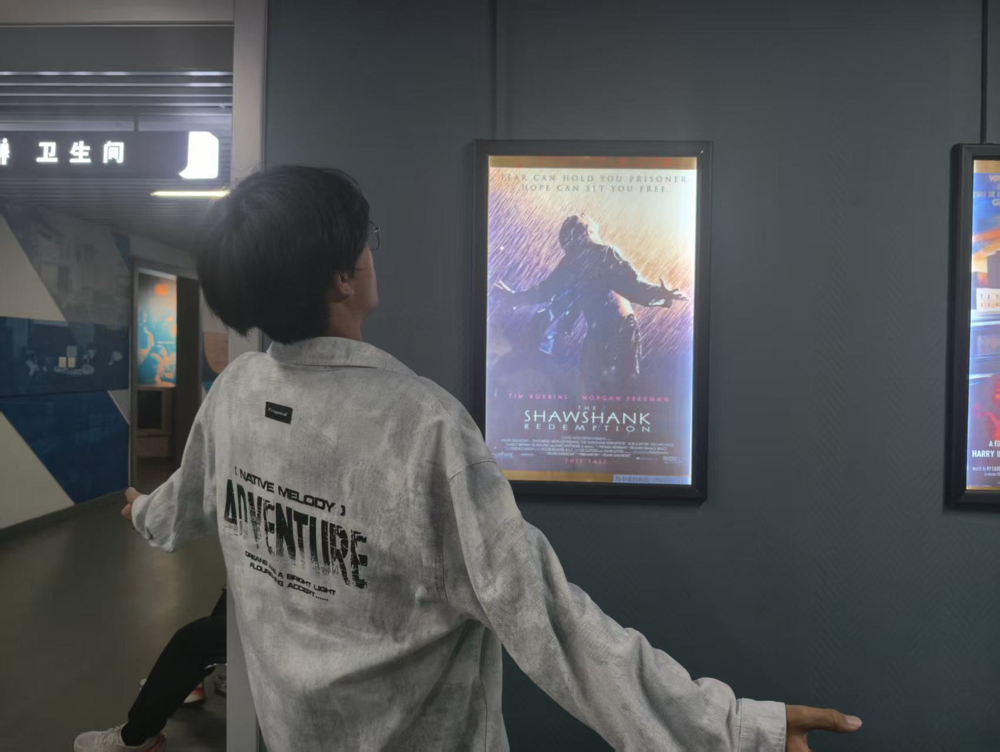
参考文献
中文文献
- 杨健, 黄莺. 古典音乐录音技术发展简史[J]. 音响技术, 2009(4-5). （连载）
- 弗里德里希·基特勒. 留声机 电影 打字机[M]. 邢春丽, 译. 上海: 复旦大学出版社, 2017.
- 姚国强, 张岳, 等. 电影声音艺术与录音技术: 历史、创作与理论[M]. 北京: 中国电影出版社, 2011.
- 朱伟, 贲小龙, 杨杰. 录音技术: 第2版[M]. 北京: 中国传媒大学出版社, 2024.
- Roey Izhaki.混音指南 人民邮电出版社，2012
英文文献
- Millard, A. America on Record: A History of Recorded Sound[M]. 2nd ed. Cambridge: Cambridge University Press, 2005.
- Sterne, J. The Audible Past: Cultural Origins of Sound Reproduction[M]. Durham: Duke University Press, 2003.
- Morton, D. L. Sound Recording: The Life Story of a Technology[M]. Baltimore: Johns Hopkins University Press, 2004.
- Horning, S. S. Chasing Sound: Technology, Culture, and the Art of Studio Recording from Edison to the LP[M]. Baltimore: Johns Hopkins University Press, 2013.